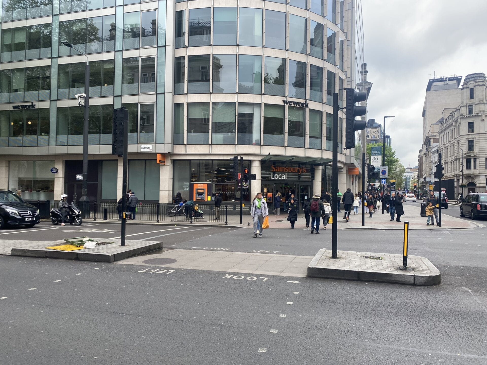

Food waste reduction
Food waste reduction
A variety of supermarkets are situated around the Holborn area, and we speculate attempts to increase sustainability from supermarkets in the future. An impressive approach to reduce food waste and increase sustainability was taken on by the Dutch supermarket chain Albert Heijn, and which we believe may inspire other supermarkets.


Examples of supermarkets situated in Holborn: Sainsbury's and Tesco. |
New initiative designed to reduce food waste (by Dutch Supermarket chain Albert Heijn)
Despite the desire to reduce waste and protect the environment, financial pressures force people to prioritise affordability over sustainability. The new feature on the AH app enables consumers to view discounted products nearing their expiration dates by showing which items are available, the quantity of each item in store, and the level of discount applied, which can reach up to 70% as the expiration date approaches. AH hopes that this initiative will increase sales of discounted items by 25%, and therefore cut down food waste. This programme links making environmentally sustainable choices with shoppers saving money, and makes it easier for consumers to locate discounted items what would otherwise go to waste.
Anthony's story
Food shopper named Anthony John who is 34 in central + App designed to reduce food waste + Holborn These three interact by the food shopper using the AH app which is the trend and Anthony is in Holborn which is the place this takes place in. The new feature on the AH app enables consumers to view discounted products nearing their expiration dates by showing which items are available, the quantity of each item in store, and the level of discount applied, which can reach up to 70% as the expiration date approaches. AH hopes that this initiative will increase sales of discounted items by 25%, and therefore cut down food waste. This programme links making environmentally sustainable choices with shoppers saving money, and makes it easier for consumers to locate discounted items what would otherwise go to waste.